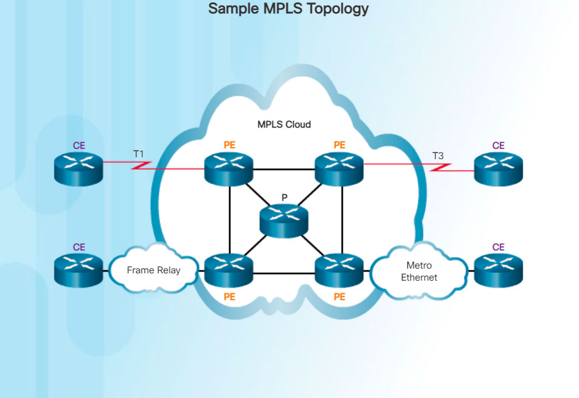

Multiprotocol Label Switching (MPLS) is a multiprotocol high-performance WAN technology that directs data from one router to the next. MPLS is based on short path labels rather than IP network addresses.
MPLS has several defining characteristics. It is multiprotocol, meaning it has the ability to carry any payload including IPv4, IPv6, Ethernet, ATM, DSL, and Frame Relay traffic. It uses labels which tell a router what to do with a packet. The labels identify paths between distant routers rather than endpoints, and while MPLS actually routes IPv4 and IPv6 packets, everything else is switched.
MPLS is a service provider technology. Leased lines deliver bits between sites, and Frame Relay and Ethernet WAN deliver frames between sites. However, MPLS can deliver any type of packet between sites. MPLS can encapsulate packets of various network protocols. It supports a wide range of WAN technologies including T-carrier / E-carrier links, Carrier Ethernet, ATM, Frame Relay, and DSL.
The sample topology in the figure illustrates how MPLS is used. Notice that the different sites can connect to the MPLS cloud using different access technologies. In the figure, CE refers to the customer edge, PE is the provider edge router which adds and removes labels, while P is an internal provider router which switches MPLS labeled packets.

Note: MPLS is primarily a service provider WAN technology.